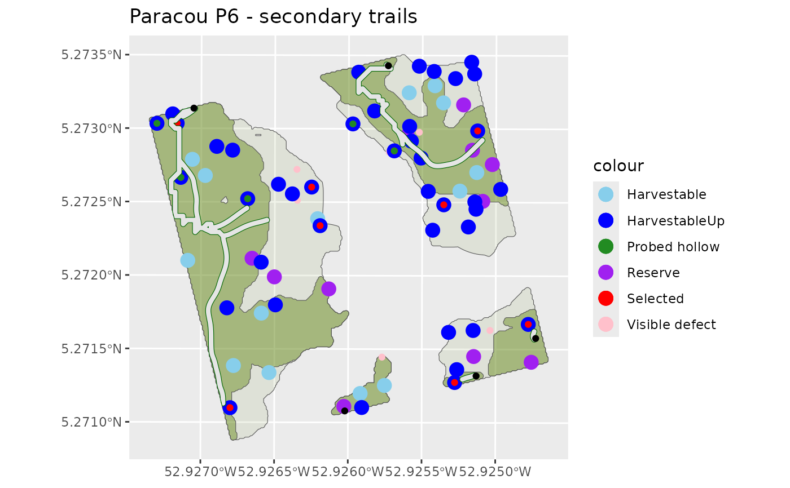

Second trails opening
Usage
secondtrailsopening(
topography,
plotmask,
maintrails,
plotslope,
harvestablepolygons,
machinepolygons,
treeselectionoutputs,
scenario,
winching = NULL,
verbose = FALSE,
advancedloggingparameters = loggingparameters()
)Arguments
- topography
Digital terrain model (DTM) of the inventoried plot (LiDAR or SRTM) (
DTMParacou) (RasterLayer with a crs in UTM)- plotmask
Inventoried plot mask (SpatialPolygonsDataFrame with a crs in UTM)
- maintrails
Main trails defined at the entire harvestable area (sf linestring with a crs in UTM)
- plotslope
Slopes (in radians) of the inventoried plot (with a neighbourhood of 8 cells) (default:
HarvestableAreaOutputsCable) (RasterLayer with a crs in UTM)- harvestablepolygons
Accessible area of the inventoried plot (default:
harvestableareadefinition) (sfc_MULTIPOLYGON)- machinepolygons
Accessible for machine area of the inventoried plot (default:
harvestableareadefinition) (sf polygons data.frame)- treeselectionoutputs
A list with:
your inventory with: "DistCriteria", "Slope", "SlopeCriteria", "LoggingStatus", "Selected", "Up", "VolumeCumSum", "ProbedHollowProba", "ProbedHollow" new columns (see the outputs metadata in the vignette).
the objective volume with or without a bonus (if hollow trees exploitation)
6 sets of spatial points: harvestable, selected, future and reserve, hollow and fuel wood trees
- scenario
Logging scenario: "RIL1", "RIL2broken", "RIL2", "RIL3", "RIL3fuel", "RIL3fuelhollow" or "manual"(character) (see the vignette)
- winching
"0": no cable or grapple (trail to tree foot) "1": only cable (default = 40m) "2": grapple (default = 6m) + cable (grapple priority) If grapple + cable (winching = "2") without fuel wood (fuel = "0") recovery of the tree foot with grapple if possible (respected grapple conditions) otherwise with cable with angle to the trail. Avoidance of future/reserves if chosen.
- verbose
Allow to provide messages from internal functions (boolean)
- advancedloggingparameters
Other parameters of the logging simulator
loggingparameters(list)
Value
A list with :
inventory: Updated inventory
SmoothedTrails: Smoothed secondary trails (MULTIPOLYGON with crs)
TrailsDensity: Second trails density (in m/ha)
TrailsIdentity: Information on sections of the trails (matrix) with:
LineID:
LoggedTrees: idTree of trees reached by the trails
TypeExpl: type of winching
MainTrailsAccess : Random access point of main trail for each harvestable zone (sfc_POINT with crs)
RawSecondTrails : Non-smoothed secondary trails (SpatialLines with crs)
CostRasterAgg: The cost raster (RasterLayer with crs)
Examples
set.seed(1)
data(Paracou6_2016)
data(DTMParacou)
data(PlotMask)
data(SpeciesCriteria)
data(HarvestableAreaOutputsCable)
data(MainTrails)
scenario <- "manual"
winching <- "2"
objective <- 10
fuel <- "2"
diversification <- TRUE
inventory <- addtreedim(cleaninventory(Paracou6_2016, PlotMask),
volumeparameters = ForestZoneVolumeParametersTable)
treeselectionoutputs <- suppressWarnings(treeselection(inventory,
topography = DTMParacou,
speciescriteria = SpeciesCriteria,
scenario = "manual", objective = objective,
fuel = fuel,
diversification = diversification,
winching = winching,
specieslax = FALSE, objectivelax = TRUE,
plotslope = HarvestableAreaOutputsCable$PlotSlope,
harvestablepolygons = HarvestableAreaOutputsCable$HarvestablePolygons,
advancedloggingparameters = loggingparameters()))
#> As the harvestable volume (= 207.7m^3)
#> was higher (by 145.2m^3)
#> than the objective volume, the Minimum Falling Diameter (MinFD) of the 1st and 2nd economic ranks species
#> were increased to UpMinFD. The objective volume has now been reached.
if (FALSE) {
secondtrails <- try(secondtrailsopening(
topography = DTMParacou,
plotmask = PlotMask,
maintrails = MainTrails,
plotslope = HarvestableAreaOutputsCable$PlotSlope,
harvestablepolygons = HarvestableAreaOutputsCable$HarvestablePolygons,
machinepolygons = HarvestableAreaOutputsCable$MachinePolygons,
treeselectionoutputs = treeselectionoutputs,
scenario = "manual",
winching = winching,
advancedloggingparameters = loggingparameters()), silent=TRUE)
}
data(SecondaryTrails)
library(ggplot2)
library(sf)
NewInventory <- treeselectionoutputs$inventory
Harvestable <- sf::st_as_sf(
dplyr::filter(NewInventory, LoggingStatus == "harvestable"),
coords = c("Xutm", "Yutm")) %>%
st_set_crs(st_crs(SecondaryTrails$MainTrailsAccess))
HarvestableUp <- sf::st_as_sf(
dplyr::filter(NewInventory, LoggingStatus == "harvestableUp"),
coords = c("Xutm", "Yutm")) %>%
st_set_crs(st_crs(SecondaryTrails$MainTrailsAccess))
Selected <- sf::st_as_sf(
dplyr::filter(NewInventory, Selected == "1"), coords = c("Xutm", "Yutm")) %>%
st_set_crs(st_crs(SecondaryTrails$MainTrailsAccess))
Reserve <- sf::st_as_sf(
dplyr::filter(NewInventory, LoggingStatus == "reserve"),
coords = c("Xutm", "Yutm")) %>%
st_set_crs(st_crs(SecondaryTrails$MainTrailsAccess))
Future <- sf::st_as_sf(
dplyr::filter(NewInventory, LoggingStatus == "future"),
coords = c("Xutm", "Yutm")) %>%
st_set_crs(st_crs(SecondaryTrails$MainTrailsAccess))
ProbedHollow <- sf::st_as_sf(
dplyr::filter(NewInventory, ProbedHollow == "1"),
coords = c("Xutm", "Yutm")) %>%
st_set_crs(st_crs(SecondaryTrails$MainTrailsAccess))
VisibleDefect <- sf::st_as_sf(
dplyr::filter(NewInventory, VisibleDefect == "1"),
coords = c("Xutm", "Yutm")) %>%
st_set_crs(st_crs(SecondaryTrails$MainTrailsAccess))
ggplot() +
# Harvestable zones
geom_sf(data = HarvestableAreaOutputsCable$HarvestablePolygons,
fill = "olivedrab", alpha = 0.1) +
geom_sf(data = HarvestableAreaOutputsCable$MachinePolygons,
fill = "olivedrab", alpha = 0.5) +
labs(alpha = "Harvestable") +
labs(title = "P6 zones exploitables") +
geom_sf(data = VisibleDefect,
aes(colour = "Visible defect"), show.legend = "point") +
# geom_sf(data = Future,
# aes(colour = "Future"), show.legend = "point", size = 4) +
geom_sf(data = Reserve,
aes(colour = "Reserve"), show.legend = "point", size = 4) +
geom_sf(data = Harvestable,
aes(colour = "Harvestable"), show.legend = "point", size = 4) +
geom_sf(data = HarvestableUp,
aes(colour = "HarvestableUp"), show.legend = "point", size = 4) +
geom_sf(data = Selected,
aes(colour = "Selected"), show.legend = "point") +
geom_sf(data = ProbedHollow,
aes(colour = "Probed hollow"), show.legend = "point") +
# 2ndary trails
geom_sf(data = st_as_sf(SecondaryTrails$SmoothedTrails), col = "darkgreen") +
geom_sf(data = st_as_sf(SecondaryTrails$MainTrailsAccess), col = "black") +
scale_colour_manual(values = c("Visible defect" = "pink",
"Harvestable" = "skyblue", "HarvestableUp" = "blue", "Selected" = "red",
"Future" = "orange", "Reserve" = "purple", "Probed hollow" = "forestgreen",
"Second trails" = "darkgreen", "Harvestable area" = "olivedrab"))

SecondaryTrails$TrailsIdentity
#> LineID LoggedTrees TypeExpl IdMachineZone
#> [1,] 1 100699 "Grpl" "ID_5"
#> [2,] 2 100727 "Grpl" "ID_5"
#> [3,] 3 101055 "Grpl" "ID_5"
#> [4,] 4 102824 "Grpl" "ID_5"
#> [5,] 5 integer,2 "Cbl" "ID_5"
#> [6,] 6 104642 "Grpl" "ID_1"
#> [7,] 7 104246 "Grpl" "ID_3"
#> [8,] 8 102086 "Grpl" "ID_2"
#> [9,] 9 102520 "Grpl" "ID_2"
#> [10,] NA 102249 "Cbl" "ID_2"